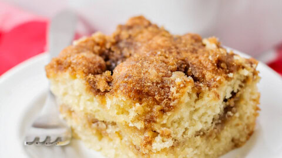

Coffee Cake

Ingredients You'll Need:
Cake Mix Ingredients:
- 1 1/2c Flour
- 3t Baking Powder
- 1/4t Salt
- 3/4c Sugar
- 1 Egg
- 1/2c Milk
- 1/2c Shortening
- 1/2c Brown Sugar
- 1t Vanilla
Strusel Ingredients:
- 1/2c Brown Sugar
- 2T Flour
- 2t Cinnamon
- 2T Salted Butter
- 1/2c Nuts
Instructions
- Preheat oven to 325 degrees Farenheit.
- Pour and spread 1/2 cake mix evenly in a pan and sprinkle 1/2 of stusel on top.
- Pour and spread the rest of cake mix and sprinkle the rest of strusel on top.
- Bake for 30min and then let rest.
- Enjoy!